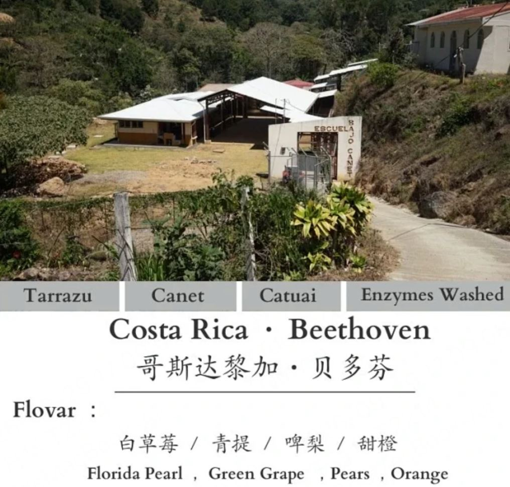
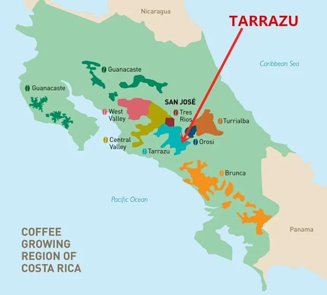
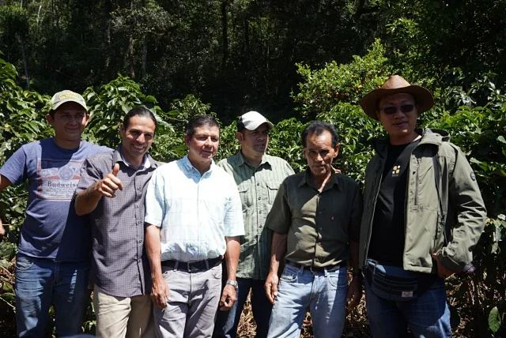
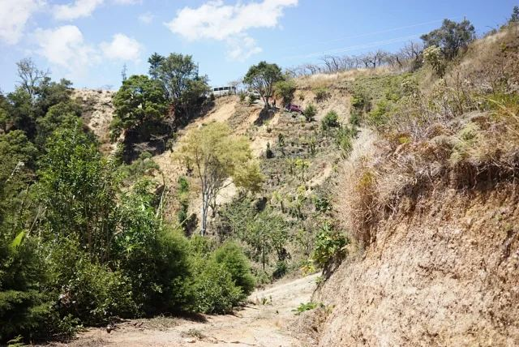
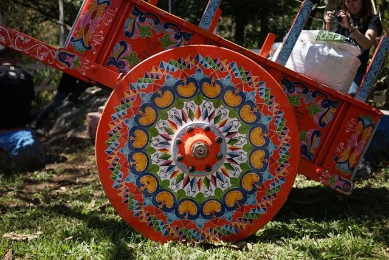
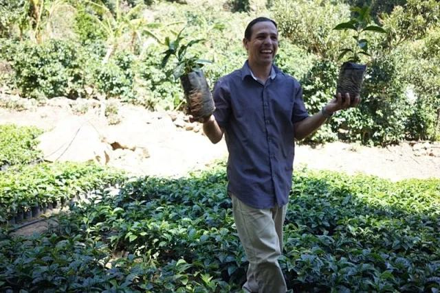
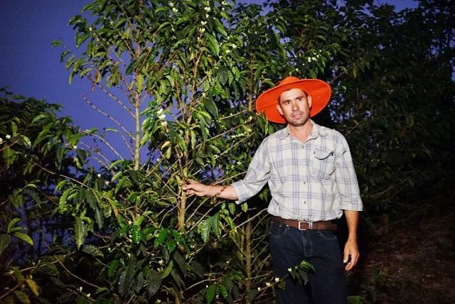
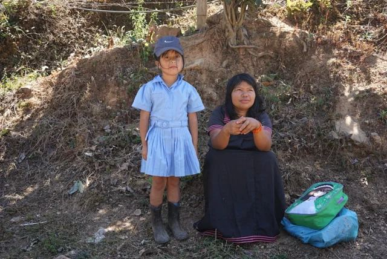

产地介绍
卡内特位于哥斯达黎加塔拉珠。这里的种植地由小农经营，林木与果树为咖啡树提供遮荫。本批卡杜艾来自标示海拔1980米的种植地，土壤为原生红土，采摘期为12月至次年2月。
塔拉珠所在的Los Santos地区雨季与旱季分明，咖啡采收多在旱季完成。当地既有高海拔种植地，也保留了树荫下种植咖啡的方式。
处理者与音乐家系列
据现有产地资料，卡内特的小农把采收的咖啡鲜果集中到小型处理厂加工。Esteban Sanches 参与改善处理品质，相关合作形成了音乐家系列。
当地种植与社区
产地照片记录了合作农场标识、育苗场、山路和彩绘牛车，也包括 Bajo Canet 社区学校、当地家庭与穿校服的孩子。
查看完整资料相册 12 张









风味记录
供方风味记录白玉兰
晴王葡萄
甜橙
干香草莓、白花、青提。
湿香啤梨、草莓、甜橙。
啜吸白玉兰、晴王葡萄、甜橙，伴有啤梨和白草莓的酸甜。
降温变化白桂花、甜桔汁，余韵带柠檬红茶。
以上为风味联想，感受会随冲煮条件与个人经验变化。
冲煮参考
水温85℃
咖啡粉20g
总水量340g
粉水比1:17
研磨：Ultra 13档（C40参考28–30格）
滤杯：V60-01
用水：ppm 27
水温85℃ · 粉20g / 水340g（1 : 17）
总萃取时长：2分钟内
供方参考配方。研磨刻度仅对应所列机型，可按器具、流速和口味调整。
豆子资料
- 国家与产区
- 哥斯达黎加 · 塔拉珠 · 卡内特
- 庄园 / 来源节点
- 卡内特 · 音乐家系列—贝多芬
- 生产者 / 处理者
- Esteban Sanches
- 品种
- 卡杜艾
- 海拔
- 1980m
- 土壤
- 原生红土
- 采摘期
- 12月至次年2月
- 处理方式
- 酵素增味水洗
- 烘焙度
- 浅焙
处理方式
酵素水洗是本批次标示的处理方式，供应豆单归为增味处理。杯中以白玉兰、葡萄与甜橙的香气为主。
烘焙记录
- 烘焙机
- 必德利6公斤级
- 烘焙量
- 1.5kg
- Agtron
- 豆色 72 / 粉色 101.2
以上为参考批次记录，当前烘焙安排以下单确认信息为准。
规格、包装与保存
100g¥79
227g¥149
454g¥279
454g采用227g×2包装。需要研磨时，请在下单时说明使用器具并确认研磨选项。
采用简洁密封袋，标签注明豆名与产地信息。收货后请密封、避光保存。当前批次、磨粉选项与发货安排，以订单确认信息为准。
同一顾客、同一收货地址的一单，优惠后商品实付满188元顺丰包邮，偏远地区除外。下单前确认商品金额及运费。